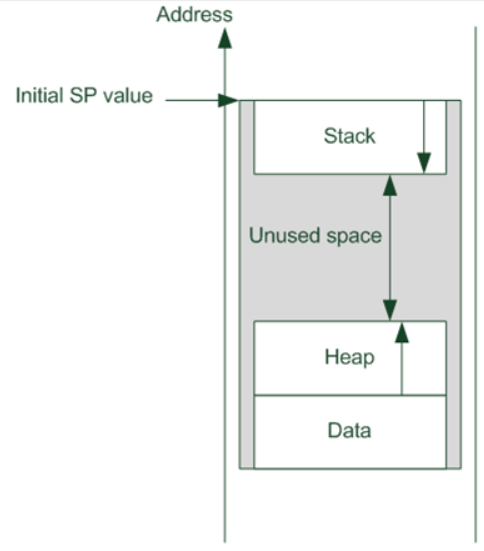
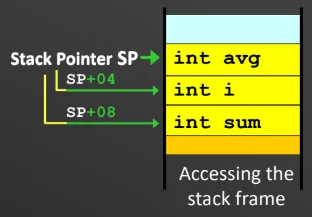
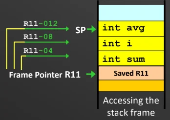
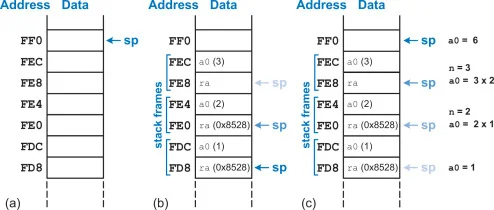

6 Modular Programming
A good software module features loose coupling (local variables: data within module is independent of other modules) and strong modularity (performs a single logically coherent task).
6.1 Subroutines
Modules are implemented as subroutines.
To call a subroutine: Use branch with link.
BL SUB1
**Do not use standard branch B because it
just overwrites the PC value without saving it, and we lose that
value.
When BL executed, the return address (current address of
BL + 4) is stored into Link Register R14.
Note: PC and LR modified.
To return control to caller program: Use Branch and
Exchange. BX LR or MOV PC LR.
This instuction copies the saved address from LR to PC.
Note: PC modified.
6.1.0.1 Transparent subroutine
If a subroutine needs to modify certain registers, it should restore
their original contents before returning control to the caller.
This guarantees that the subroutine does not affect the proper operation
of the calling program.
6.1.1 Parameter Passing via Registers / Pass by value
Parameters are placed directly into specific registers right before
the subroutine is called.
Register convention:
R0-R3: For passing argument values into the subroutine and returning results back to the caller. A standard subroutine is free to modify these values (and not restore them).
R4–R11: Strictly used to hold local variables, not for passing arguments. If a subroutine uses them, it must preserve their original values.
R12: This acts as a scratchpad register and does not need to be preserved (for standard subroutine).
This is the fastest method as the subroutine does not need to fetch
the parameters from memory.
However, it lacks generality because the number of parameters you can
pass is limited by the hardware registers available. It is only useful
when dealing with a small number of parameters.
Bit Counting Subroutine (Register passing)
; --- Calling Program ---
Main MOV R1, #0xFF ; Load a test word into R1
BL Count1s ; Call the subroutine
Stop B Stop ; End of program loop
; --- Subroutine ---
Count1s EOR R0, R0, R0 ; Clear R0
ADD R2, R0, #32 ; Set counter R2 with 32
ADD R3, R0, #1 ; Set R3 with 1
Loop AND R4, R3, R1, ROR R2 ; Set R3 as a mask with value 1, apply to rotated R1
ADD R0, R0, R4 ; Add the lsb to R0
SUBS R2, R2, #1 ; Decrement counter by 1
BNE Loop ; Loop if not zero
MOV PC, LR ; Return from subroutinePurpose: To calculate the total number of ’1’ bits present within a 32-bit data word.
Parameter passing: The calling program places the target word directly into R1.
Transparency: Registers R0, R2, R3, R4 were modified, and were not restored. This subroutine is not transparent.
6.1.2 Parameter Passing via Memory / Pass by reference
The parameters are gathered into a block at a predefined memory
location.
The caller passes the start address of the memory block to the
subroutine using a address register (like R0).
This method is useful for passing a large number of parameters or larger
data types like arrays and strings.
Lower to Upper Case Subroutine (Efficient Memory Passing)
; --- Calling Program ---
Main MOV R0, #0x100 ; move start addr. of string to R0
BL Lo2Up ; branch to Lo2Up subroutine
Stop B Stop ; End of program loop
; --- Subroutine ---
Lo2Up STMFD SP!, {r0,r1} ; save registers used within subroutine
Loop LDRB R1, [R0], #1 ; get current char from string in memory
CMP R1, #0 ; Compare with NULL
BEQ Done ; if NULL char, branch to Done
CMP R1, #0x061 ; compare with lower limit 'a'
BLT Loop ; if smaller than 'a', do not convert
CMP R1, #0x07A ; compare with upper limit 'z'
BGT Loop ; if greater than 'z', do not convert
SUB R1, R1, #32 ;convert to upper case by subtracting 32
STRB R1, [R0, #-1] ; write modified char back to memory
B Loop ; branch back to Loop
Done LDMFD SP!, {r0,r1} ; restore saved registers
MOV PC, LR ; return from subroutinePurpose: To convert a null-terminated ASCII string stored in memory from lowercase letters to uppercase letters in place.
Parameter passing: The calling program places the starting memory address of the string into R0.
Transparency: Yes. Original values of registers R0, R1 were pushed onto the system stack at the start of the subroutine. They were then modifed, and subsequently pops the values from the system stack back into R0, R1.
6.2 System Stack
The system stack is managed by SP/R13.
The stack grows towards lower memory addresses.
Stack starts from highest address and grows downwards, as opposed to the heap (used for dynamic memory allocation) that starts from the lowest memory addresses and grows upwards.

Stack grows downwards.
Pushing data: Decrease SP before pushing:
STR R0, [SP,#-4]!.
For multiple registers: STMFD SP!, list of registers.
Popping data: Update SP after read: LDR R0, [SP],
#4.
For multiple registers: LDMFD SP!, list of registers.
Note that popping data does not erase it; it justs shifts the SP.
Note that for STMFD and LDFMD, higher register
number corresponds to higher memory address. Lower register number
corresponds to lower memory address (closer to SP).
6.2.0.1 Local variables
These only exist during the execution of the subroutine.
The system stack is used to create a temporary memory space, called a
"stack frame," to hold these local variables upon subroutine
entry.
Accessing the stack frame:
Using a Frame Pointer (FP): A dedicated register (usually R11 in ARM) acts as a fixed reference point. Variables are accessed using a negative displacement from the FP.
Using the Stack Pointer (SP): Variables are accessed using a positive displacement directly from the SP. This is more efficient (no need to set up an FP) but more restrictive, as any push/pop within the subroutine shifts the SP, ruining your reference offsets.
R4-R11 are designated for local variables, so transparent subroutines must restore the original values of these registers.


6.2.1 Parameter passing via Stack
Parameters are pushed onto the stack by the calling program before
executing the BL instruction. The subroutine then retrieves these
parameters using calculated offsets from the SP.
This method is required for recursive
programming.
To prevent stack overflow, the calling program must remove the
parameters from the stack immediately after the subroutine returns. This
is usually done by adding a value back to the SP.
Sum from 1 to N Program (Stack Parameter Passing)
; --- Calling Program ---
Main MOV R1, #5 ; Load value N=5 into R1
MOV R0, #0x100 ; Load address of Answer into R0
STMFD SP!, {R0, R1} ; Push Address and N to stack
BL Sum1N ; Call subroutine Sum1N
ADD SP, SP, #8 ; Pop parameters, free stack space
Stop B Stop ; End of program loop
; --- Subroutine ---
Sum1N STMFD SP!, {R4, R5, R6} ; Save local registers to stack
LDR R5, [SP, #16] ; Load N from stack into R5
LDR R6, [SP, #12] ; Load Answer's address into R6
MOV R4, #0 ; Clear summation register R4 to 0
Loop ADD R4, R4, R5 ; Add current value in R5 to sum in R4
SUBS R5, R5, #1 ; Decrement loop counter (N) in R5
BNE Loop ; Loop if R5 is not yet zero
STR R4, [R6] ; Write final sum to memory at Answer's address
LDMFD SP!, {R4, R5, R6} ; Restore saved local registers
MOV PC, LR ; Return from subroutinePurpose: Computes the sum of positive numbers from 1 to a given value, N.
Parameter passing: The calling program pushes two distinct parameters onto the stack before calling the subroutine.
N passed by value, memory address of Address passed by reference.Transparency: Yes, R4, R5, R6 were modified, and were stored onto stack then popped off to restore their values.
6.3 Nested Subroutines
Nested subroutines is when a subroutine calls another subroutine
(nested call).
The problem: When Subroutine 1 uses the BL instruction
to call Subroutine 2, the Link Register is immediately overwritten with
a new return address. Consequently, the original return address back to
the Main Program is permanently lost, leaving the program stuck in the
nested subroutine.
The solution: The Link Register must be preserved by
saving it to a safe location, specifically the System Stack. You have
two options for when to save it: just before executing any BL
instruction, or at the very beginning of the subroutine alongside your
local registers (e.g., STMFD SP!, R4-R7, LR).
If you decide to push additional registers (like the LR) to the stack at
the start of your subroutine, it changes the current position of the
Stack Pointer. Therefore, you must recalculate and update the offset
values used in your LDR instructions to correctly retrieve any
parameters that were passed via the stack by the main program.
Dot product example:
Multiplication Subroutine (Used by Dot Product)
Mult MOV R12, #0 ; Clear R12
Loop ADD R12, R12, R0 ; Add R0 to R12
SUBS R1, R1, #1 ; Decrement R1 with 1
BNE Loop ; Loop if not zero
MOV PC, LR ; same as bx lr (Return)Nested Subroutine: Dot Product (Option 1: Save LR before BL)
DotProd STMFD SP!, {R4-R7} ; Store regs to stack
LDR R4, [SP, #28] ; Read location of X
LDR R5, [SP, #24] ; Read location of Y
LDR R6, [SP, #20] ; Read arrays length
MOV R7, #0 ; Clear R7 (Sum)
Loop1 LDR R0, [R4], #4 ; Get X[i]
LDR R1, [R5], #4 ; Get Y[i]
STR LR, [SP, #-4]! ; Push Link register to SP just before BL
BL Mult ; Call Mult Subroutine
LDR LR, [SP], #4 ; Pop Link Register from SP immediately after
ADD R7, R7, R12 ; Add the product to R7
SUBS R6, R6, #1 ; Reduce the counter by 1
BNE Loop1 ; not 0 then repeat
LDR R4, [SP, #16] ; read destination address
STR R7, [R4] ; Store in destination address
LDMFD SP!, {R4-R7} ; Restore registers
MOV PC, LR ; same as bx lrNested Subroutine: Dot Product (Option 2: Save LR at Beginning)
DotProd STMFD SP!, {R4-R7, LR} ; Store regs to stack (including LR)
LDR R4, [SP, #32] ; Read loc of X (Offset updated +4 due to LR push)
LDR R5, [SP, #28] ; Read loc of Y (Offset updated)
LDR R6, [SP, #24] ; Read arrays length (Offset updated)
MOV R7, #0 ; Clear R7 (Sum)
Loop1 LDR R0, [R4], #4 ; Get X[i]
LDR R1, [R5], #4 ; Get Y[i]
BL Mult ; Call Mult Subroutine (LR is already safe)
ADD R7, R7, R12 ; Add the product to R7
SUBS R6, R6, #1 ; Reduce the counter by 1
BNE Loop1 ; not 0 then repeat
LDR R4, [SP, #20] ; read destination address (Offset updated)
STR R7, [R4] ; Store in destination address
LDMFD SP!, {R4-R7, LR} ; Restore registers
MOV PC, LR ; same as bx lr6.4 Recursive subroutines
A recursive routine is a subroutine that calls itself within its own
body.
Two critical requirements:
Preserving the Return Address: Because recursion relies heavily on the BL instruction, execution will get stuck if the LR is not systematically saved to the stack during every single recursive call.
A Stopping Condition: There must be a specific terminating condition established that allows the program to skip the recursive BL instruction. Without this, the subroutine will execute infinitely.
Recursive Subroutine: Fibonacci Sequence
Fib STMFD SP!, {R4-R6, LR} ; Store regs to stack (Satisfies LR preserve req)
LDR R4, [SP, #16] ; Read Value of n
CMP R4, #1 ; Compare with 1 (if n==1)
MOVEQ R12, #0 ; Assign result with 0
CMP R4, #2 ; Compare with 2 (if n==2)
MOVEQ R12, #1 ; Assign result with 1
BLE Done ; if n <= 2 finish (Satisfies stopping condition req)
SUB R5, R4, #1 ; Get n-1
STMFD SP!, {R5} ; Push n-1 to stack
BL Fib ; calculate Fib(n-1)
LDMFD SP!, {R5} ; Pop from stack
MOV R6, R12 ; Save result in temp register
SUB R5, R4, #2 ; Get n-2
STMFD SP!, {R5} ; Push n-2 to stack
BL Fib ; calculate Fib(n-2)
LDMFD SP!, {R5} ; Pop from stack
ADD R12, R12, R6 ; Calculate Fib(n-1) + Fib(n-2)
Done LDMFD SP!, {R4-R6, LR} ; Restore registers
MOV PC, LR ; same as bx lr6.4.1 Visualising recursion

(a): The stack pointer (SP) is resting at memory
address FF0.
(b):
The stack pointer (SP) is resting at memory address FF0.
Frame 1: It pushes the current argument a0 (3) and the return address ra onto the stack so it remembers what to multiply later. SP moves down 8 bytes to FE8.
Frame 2: The function calls itself with n=2. It needs to call itself again for n=1, so it saves a0 (2) and the exact same ra (0x8528). SP moves down to FE0.
Frame 3: It calls itself with n=1. It saves a0 (1) and ra (0x8528). SP moves to FD8.
(c):
The function hits its base case (when n=1), meaning it no longer needs to call itself.
The processor starts reading the saved states, moving the sp back up the stack (popping the frames off).
The stack pointer is back at FF0, the memory is cleaned up, and the final answer 6 is sitting in the a0 register ready for the main program to use.
Inferring the number of recursive calls:
Identify the Recursive Signature: Scan the stack for a repeating hex address in the position where the Link Register or Return Address is normally saved. In this example, it is 0x8528.
Count the Duplicates: The initial call to the function from the main program will have a unique return address (or it might not be explicitly shown if it’s the top of the trace). Every time the function recursively calls itself, it pushes an identical ra onto the stack. Note that ra at 0xFE8 is different from ra and 0xFE0 and 0xFD8.
The Formula: The number of times you see that identical ra value equals the number of recursive calls executed. In panel (b), 0x8528 is saved twice (at FE0 and FD8), meaning the function recursively called itself exactly two times after the initial start.